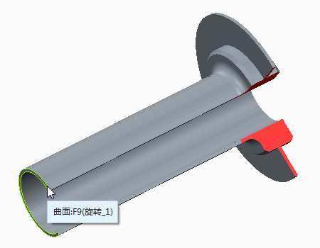
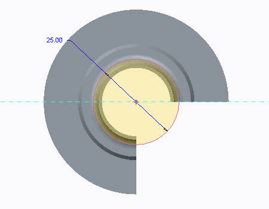
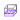
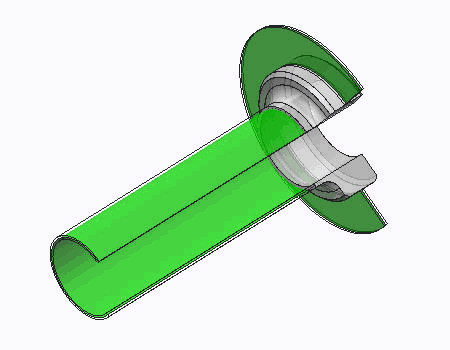
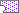
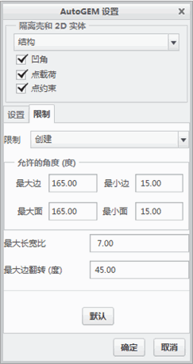
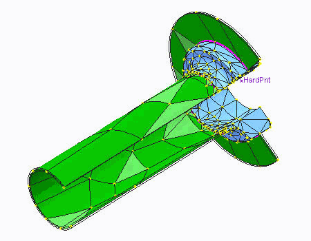

练习: 使用 AutoGEM 设置 - 混合网格
目标
成功完成此练习后，您将能够：
- 使用实体和壳元素创建混合网格。
假定背景
在本练习中，您将使用 Creo Simulate 探索一些网格化功能。
“关闭窗口”(Close Window) “拭除未显示的”(Erase Not Displayed)
“拭除未显示的”(Erase Not Displayed) 
 Simulate_Modeling\MixedMeshes
Simulate_Modeling\MixedMeshes
MESHING_SIMULATE.PRT
|
|
||
 |
Creo Parametric 用户打开 MESHING.PRT | |
|
|
||
-
任务 1. 创建体积块区域。
1. 在功能区中，选择“精细模型”(Refine Model) 选项卡。
2. 从“区域”(Regions) 组中的“体积块区域”(Volume Region) 下拉菜单中单击“拉伸”(Extrude)
 。“拉伸”(Extrude) 操控板随即出现。
。“拉伸”(Extrude) 操控板随即出现。
3. 选择“放置”(Placement) 选项卡。
4. 单击“定义”(Define)。将出现“草绘”(Sketch) 对话框。
5. 在模型中选择显示的曲面。
6. 单击“草绘”(Sketch)。

7. 在功能区中，选择“草绘”(Sketch) 选项卡。
8. 在“设置”(Setup) 组中单击“草绘视图”(Sketch View)
 以定向草绘平面。
以定向草绘平面。
9. 草绘一个以该孔为中心的直径为 25.0 mm 的圆，如图所示。
10. 单击“确定”(OK)
 以返回到“拉伸”(Extrude) 操控板。
以返回到“拉伸”(Extrude) 操控板。
11. 单击“指定的深度”(Specified Depth) ，然后在该字段中键入 65.0。
12. 单击“应用保存更改”(Apply-Save Changes) 。

-
任务 2. 创建壳对。
1. 在功能区中，选择“精细模型”(Refine Model) 选项卡。
2. 从“理想化”(Idealizations) 组中的“壳对”(Shell Pair) 下拉菜单中单击“壳对”(Shell Pair) > “检测壳对”(Detect Shell Pairs)。“自动检测壳对”(Auto Detect Shell Pairs) 对话框随即出现。
3. 校验“使用几何分析”(Use Geometry Analysis) 已被选定。
4. 在“特征厚度”(Characteristic Thickness) 字段中键入 1.0。
5. 单击“开始”(Start)。“自动检测壳对”(Auto Detect Shell Pairs) 对话框随即关闭。
6. 在模型树中，展开“理想化”(Idealizations) 和“壳对”(Shell Pairs)。请注意，列出三个壳对。选择每个壳对以在模型中将其突出显示。
7. 右键单击 ShellPair1，然后选择“删除”(Delete)。在“确认”(Confirmation) 对话框中单击“是”(Yes)。
由于要在应力计算中考虑均匀的厚度，因此需要删除壳对。
8. 从 AutoGEM 组中单击“审阅几何”(Review Geometry) 。“模拟几何”(Simulation Geometry) 对话框随即出现。
9. 查看壳曲面是否成功配对。请注意，在 Creo Simulate 中默认情况下为模型中找到的所有壳曲面分配绿色。浅灰色已分配给实体曲面。可通过单击“更改颜色”(Change Color) 更改颜色。
10. 单击“应用”(Apply)。请注意模型中的中间平面压缩，如图所示。
11. 单击“关闭”(Close)。

-
任务 3. 将网格应用到模型中。
1. 在功能区中，选择“精细模型”(Refine Model) 选项卡。
2. 从 AutoGEM 组中单击AutoGEM 。将出现 AutoGEM 对话框。
3. 保留所有默认设置并单击“创建”(Create)。模型已网格化，如图所示。请注意，将壳连接到实体的洋红色线。默认情况下，它们是连接实体和壳元素时在 Creo Simulate 中自动创建的链接。它们考虑了这些类型元素之间的旋转耦合。
由于实体元素没有使其旋转的自由度，且壳具有所有可用的平移和旋转自由度，因此，软件使用这些链接可正确地将变形从壳传递到实体中。
4. 在“AutoGEM 摘要”(AutoGEM Summary) 对话框中，单击“关闭”(Close)。
5. 在“诊断：AutoGEM 网格”(Diagnostics:AutoGEM Mesh) 对话框中，单击“关闭”(Close)。
6. 在 AutoGEM 对话框中，单击“关闭”(Close)。提示保存网格时单击“否”(No)。
-
任务 4. 使用新的 AutoGEM 设置应用新网格。
1. 从 AutoGEM 组的 AutoGEM 下拉菜单中选择“设置”(Settings)。“AutoGEM 设置”(AutoGEM Settings) 对话框随即出现。在“设置”(Settings) 选项卡中，选择“根据需要创建连接”(Create Links Where Needed)。
2. 选择“限制”(Limits) 选项卡。如图所示完成字段。
3. 单击“确定”(OK)。
4. 从 AutoGEM 组中单击AutoGEM 。将出现 AutoGEM 对话框。
5. 保留所有默认设置并单击“创建”(Create)。模型已网格化，如图所示。请注意，将壳连接到实体的洋红色线。默认情况下，它们是连接实体和壳元素时在 Creo Simulate 中自动创建的链接。它们考虑了这些类型元素之间的旋转耦合。
由于实体元素没有使其旋转的自由度，且壳具有所有可用的平移和旋转自由度，因此，软件使用这些链接可正确地将变形从壳传递到实体中。
6. 在“AutoGEM 摘要”(AutoGEM Summary) 对话框中，单击“关闭”(Close)。
7. 在“诊断：AutoGEM 网格”(Diagnostics:AutoGEM Mesh) 对话框中，单击“关闭”(Close)。
8. 在 AutoGEM 对话框中，单击“关闭”(Close)。提示保存网格时单击“否”(No)。
-
任务 5. 调整 AutoGEM 设置以消除实体壳链接。
1. 从 AutoGEM 组的 AutoGEM 下拉菜单中选择“设置”(Settings)。“AutoGEM 设置”(AutoGEM Settings) 对话框随即出现。
2. 选择“设置”(Settings) 选项卡。取消选中“根据需要创建链接”(Create Links Where Needed)。
3. 单击“确定”(OK)。
4. 从 AutoGEM 组中单击AutoGEM 。将出现 AutoGEM 对话框。
5. 保留所有默认设置并单击“创建”(Create)。
元素之间不再存在洋红色链接。元素之间已包括枢轴。如果载荷作用在此元件上，则可能会使通过壳元素建模的区域绕着连接到实体元素的枢轴旋转。

6. 在“AutoGEM 摘要”(AutoGEM Summary) 对话框中，单击“关闭”(Close)。
7. 在“诊断：AutoGEM 网格”(Diagnostics:AutoGEM Mesh) 对话框中，单击“关闭”(Close)。
8. 在 AutoGEM 对话框中，单击“关闭”(Close)。提示保存网格时单击“否”(No)。
练习就此结束。